PHP 드라이버¶
CUBRID PHP 드라이버는 PHP로 작성한 응용 프로그램에서 CUBRID 데이터베이스를 사용할 수 있는 API를 제공한다. CUBRID PHP 드라이버가 제공하는 모든 함수는 앞에 cubrid_ 가 붙는다 (예: cubrid_connect(), cubrid_connect_with_url()).
공식 CUBRID PHP 드라이버는 PECL 패키지로 제공한다. PECL은 PHP 확장 저장소로, PHP 확장 개발 및 다운로드를 위한 편의 기능을 제공한다. PECL에 대한 자세한 내용은 http://pecl.php.net/ 을 참고한다.
CUBRID PHP 드라이버는 CCI API를 기반으로 작성되었으므로, CCI API 및 CCI에 적용되는 CCI_DEFAULT_AUTOCOMMIT 과 같은 설정 파라미터에 영향을 받는다.
PHP 설치 및 설정¶
가장 쉽고 빠르게 응용 프로그램을 시스템에 설치하려면 Ubuntu에 CUBRID와 Apache, PHP를 설치한다.
Linux¶
기본 환경
운영체제: Linux: 32 비트 또는 64비트
웹 서버: Apache
PHP: 5.2 또는 5.3( https://www.php.net/downloads.php )
PHP: 5.x, 또는 7.x (https://www.php.net/downloads.php)
편의상 최신 PHP 5.6.x, 7.1.x 및 7.4.x를 참조 바랍니다.
PECL을 이용한 설치
PECL 이 설치되어 있다면, PECL 이 소스코드 다운로드 및 컴파일을 수행하므로 다음과 같이 간단하게 CUBRID PHP 드라이버를 설치할 수 있다.
다음과 같은 명령어를 입력하여 CUBRID PHP 드라이버 최신 버전을 설치한다.
sudo pecl install cubrid
하위 버전의 드라이버가 필요하면 다음과 같이 설치할 버전을 지정할 수 있다.
sudo pecl install cubrid-10.1.0.0002
설치가 진행되는 중에 CUBRID base install dir autodetect : 라는 프롬프트가 표시된다. 설치를 원활하게 진행하기 위해서 CUBRID를 설치한 디렉터리의 전체 경로를 입력한다. 예를 들어 CUBRID가 /home/cubridtest/CUBRID 디렉터리에 설치되었다면, /home/cubridtest/CUBRID 를 입력한다.
설정 파일을 수정한다.
CentOS 6.0 이상 버전이나 Fedora 15 이상 버전을 사용한다면 cubrid.ini 파일을 생성하고 내용에 extension=cubrid.so 를 입력하여 /etc/php.d 디렉터리에 저장한다.
다른 운영체제를 사용한다면 php.ini 파일 끝에 다음 두 줄의 내용을 추가한다. php.ini 파일의 기본 위치는 /etc/php5/apache2 또는 /etc 이다.
[CUBRID] extension=cubrid.so
변경된 내용을 반영하려면 웹 서버를 재시작한다.
apt-get을 이용하여 Ubuntu에 설치
PHP가 설치되어 있지 않다면, 다음 명령어로 PHP를 설치한다.
sudo apt-get install php5 or for PHP version 7 sudo add-apt-repository ppa:ondrej/php sudo apt-get update sudo apt-get install php7.1
apt-get 를 이용하여 CUBRID PHP 드라이버를 설치하려면, Ubuntu가 패키지 다운로드 위치를 알고 인덱스를 업데이트하도록 CUBRID 저장소를 추가해야 한다.
sudo add-apt-repository ppa:cubrid/cubrid sudo apt-get update
다음과 같이 드라이버를 설치한다.
sudo apt-get install php5-cubrid
최신 버전보다 하위 버전을 설치하려면 다음과 같이 버전을 명시한다.
sudo apt-get install php5-cubrid-8.3.1
위 명령어는 cubrid.so 드라이버를 /usr/local/lib/php/* 디렉터리에 복사하고 다음과 같은 설정을 /etc/php.ini 파일에 추가한다.
[PHP_CUBRID] extension=cubrid.so
PHP가 모듈을 읽어들이도록 Apache 서버를 재시작한다.
service apache2 restart
Windows¶
기본 환경
CUBRID: 9.3.x 이상
운영체제: Windows 32 비트 또는 64비트
웹 서버: Apache 또는 IIS
PHP: 5.6.x, 7.1.x 또는 7.4.x(https://windows.php.net/download/)
PHP 7.1.x 또는 7.4.x 의 경우 32bit 또는 64bit용 Microsoft Visual C ++ 2015 재배포 가능 패키지를 설치해야 한다.
CUBRID PHP API Installer를 사용한 설치
CUBRID PHP API Installer는 자동으로 CUBRID와 PHP의 버전을 인식하여 해당 버전에 맞는 드라이버를 설치하는 Windows 설치 관리자이다. 드라이버를 기본 PHP 확장 디렉터리( C:\Program Files\PHP\ext )에 복사하고 php.ini 파일을 수정한다. 여기에서는 CUBRID PHP API Installer를 이용하여 Windows에 CUBRID PHP 확장을 설치하는 방법을 설명한다.
CUBRID PHP 드라이버를 제거하려면 CUBRID PHP API Installer를 다시 실행하여 프로그램 제거를 선택한다. 이 방법으로 CUBRID PHP 드라이버를 제거하면 설치할 때 발생한 모든 변경 사항이 복구된다.
CUBRID PHP 드라이버를 설치하기 전에 PHP와 CUBRID의 경로가 시스템 변수의 Path 에 추가되어 있어야 한다.
다음 주소에서 CUBRID PHP API Installer를 다운로드한다. 아래 주소에서는 모든 CUBRID 버전에 대한 CUBRID PHP 드라이버를 제공한다.
CUBRID PHP API Installer를 실행하고 [다음]을 클릭하여 설치를 진행한다.
BSD 라이선스 조항에 동의하고 [다음]을 클릭한다.
CUBRID PHP API Installer를 설치할 경로를 지정하고 [다음]을 클릭한다. PHP를 설치한 경로가 아니라 예를 들면 C:\Program Files\CUBRID PHP API 와 같은 새로운 경로를 입력해야 한다.
Windows [시작] 메뉴의 폴더 이름을 지정하고 [설치]를 클릭한다. 설치에 실패하면 아래의 환경 변수 설정 을 참고한다.
설치를 마치면 [마침]을 클릭한다.
변경 내용을 반영하기 위해서 웹 서버를 재시작한다. 제대로 설치되었는지 확인하려면 phpinfo()를 실행한다.

시스템 환경 변수 설정
설치 중에 오류가 발생하면 시스템 환경 변수가 제대로 설정되었는지 확인해야 한다. CUBRID를 설치하면 자동으로 설치 경로가 시스템 환경 변수 Path 에 추가된다. 시스템 환경 변수가 제대로 설치되었는지 확인하려면, Windows의 [시작] > [모든 프로그램] > [보조프로그램] > [명령 프롬프트]를 실행하고 다음 작업을 수행한다.
다음 명령을 입력한다.
php --version
시스템 환경 변수가 제대로 설정되었다면 아래와 같이 PHP 버전을 확인할 수 있다.
PHP 5.6.30 (cli) (built: Jun 13 2017 16:16:30) 또는 7.1.x PHP 7.1.7 (cli) (built: Aug 3 2017 10:59:35) ( NTS ) C:\Users\Administrator>php --version PHP 5.6.30 (cli) (built: Jan 18 2017 19:47:28)
다음 명령을 입력한다.
cubrid --version
시스템 환경 변수가 제대로 설정되었다면 아래와 같이 CUBRID 버전을 확인할 수 있다.
C:\Users\Administrator>cubrid --version cubrid.exe (CUBRID utilities) CUBRID 9.3 (9.3.8.0003) (64bit release build for Windows_NT) (Apr 11 2017 11:54:08)
위와 같은 결과가 출력되지 않는다면 PHP와 CUBRID가 설치되지 않았을 가능성이 높으므로 PHP와 CUBRID를 다시 설치한다. 만약 다시 설치해도 시스템 환경 변수가 제대로 설정되지 않는다면, 다음과 같이 수동으로 시스템 환경 변수를 설정한다.
[내 컴퓨터]를 마우스 오른쪽 버튼으로 클릭하여 [속성]을 선택하면 [시스템 속성] 대화 상자가 나타난다.
[고급] 탭을 선택하고 [환경 변수]를 클릭한다.
[시스템 변수]에서 Path 를 선택하고 [편집]을 클릭한다.
변수 값에 CUBRID와 PHP의 설치 경로를 추가한다. 각 경로는 세미콜론(;)으로 구분한다. 만약 PHP를 C:\Program Files\PHP 디렉터리에 설치하고 CUBRID를 C:\CUBRID\bin 디렉터리에 설치했다면, 변수 값의 끝에 C:\CUBRID\bin;C:\Program Files\PHP 를 덧붙인다.
[확인]을 클릭한다.
앞에서 설명한 방법으로 시스템 환경 변수가 제대로 설정되었는지 확인한다.
빌드된 드라이버 다운로드 및 설치
운영체제와 PHP 버전에 맞는 Windows용 CUBRID PHP/PDO 드라이버를 https://www.cubrid.org/downloads#php 에서 다운로드한다.
PHP 드라이버를 다운로드하면 php_cubrid.dll 파일을 볼 수 있으며, PDO 드라이버를 다운로드하면 php_pdo_cubrid.dll 파일을 볼 수 있다. 드라이버를 설치하는 방법은 다음과 같다.
드라이버 파일을 기본 PHP 확장 디렉터리( C:\Program Files\PHP\ext )에 복사한다.
시스템 환경 변수를 설정한다. 시스템 환경 변수 PHPRC 의 값으로 C:\Program Files\PHP 가 설정되고, Path 에 %PHPRC% 와 %PHPRC\ext 가 추가되었는지 확인한다.
php.ini ( C:\Program Files\PHP\php.ini ) 파일을 열어 끝에 다음 두 줄을 추가한다.
[PHP_CUBRID] extension=php_cubrid.dll
PDO 드라이버의 경우에는 다음 내용을 추가한다.
[PHP_PDO_CUBRID] extension = php_pdo_cubrid.dll
웹 서버를 재시작한다.
PHP 드라이버 빌드¶
Linux¶
여기에서는 Linux에서 CUBRID PHP 드라이버를 빌드하는 방법을 설명한다.
환경 설정
CUBRID: CUBRID를 설치한다. 시스템에 환경 변수 %CUBRID% 가 정의되어 있는지 확인한다.
PHP 5.6.x , 7.1.x 또는 7.4.x 소스코드: PHP 5.3 소스코드를 다음 주소에서 다운로드한다. https://www.php.net/downloads.php
Apache 2: PHP 테스트에 Apache 2를 사용할 수 있다.
CUBRID PHP 드라이버 소스코드: https://www.cubrid.org/downloads#php 에서 CUBRID 버전에 맞는 CUBRID PHP 드라이버의 소스코드를 다운로드한다.
Linux 또는 Mac 에서는 CCI 드라이버 빌드를 하려면 GNU Developer Toolset 8 또는 그 이상이 필요하다.
CUBRID PHP 드라이브 빌드
PHP 소스코드를 압축 해제하여 해당 디렉터리로 이동한다.
$> tar zxvf php-<version>.tar.gz (or tar jxvf php-<version>.tar.bz2) $> cd php-<version>/ext
phpize를 실행한다. phpize에 대한 내용은 참고 사항 을 참고한다.
cubrid-php> /usr/bin/phpize
프로젝트를 설정한다. 설정을 실행하기 전에 먼저 ./configure -h 를 실행하여 설정 옵션을 확인하는 것을 권장한다. 설정 방법은 다음과 같다(Apache 2가 /usr/local 에 설치되어 있다고 가정한다).
cubrid-php>./configure --with-cubrid --with-php-config=/usr/local/bin/php-config
–with-cubrid=shared: CUBRID 지원을 포함한다.
–with-php-config=PATH: 절대 경로를 포함한 php-config의 파일 이름을 입력한다.
프로젝트를 빌드한다. 프로젝트가 성공적으로 빌드되면 /modules 디렉터리에 cubrid.so 파일이 생성된다.
cubrid.so 파일을 /usr/local/php/lib/php/extensions 디렉터리에 복사한다.
cubrid-php> mkdir /usr/local/php/lib/php/extensions cubrid-php> cp modules/cubrid.so /usr/local/php/lib/php/extensions
php.ini 파일에 extension_dir 변수에 PHP 확장의 경로를 입력하고 extension 변수에 CUBRID PHP 드라이버 파일 이름을 입력한다.
extension_dir = "/usr/local/php/lib/php/extension/no-debug-zts-xxx" extension = cubrid.so
CUBRID PHP 드라이버 설치 확인
다음과 같은 내용의 test.php 파일을 생성한다.
<?php phpinfo(); ?>
웹 브라우저로 http://localhost/test.php 에 접속하여 다음 내용이 보이는지 확인한다. 다음 내용이 보이면 설치가 완료된 것이다.
CUBRID
Value
Version
10.1.0.XXXX
참고 사항
phpize는 PHP 확장의 컴파일을 준비하는 셸 스크립트로, 일반적으로 PHP를 설치할 때 자동으로 설치된다. 만약 phpize가 설치되어 있지 않으면 다음과 같은 방법으로 설치할 수 있다.
PHP 소스코드를 다운로드한다. PHP 확장을 사용할 버전과 일치하는 버전을 다운로드해야 한다. 다운로드한 PHP 소스코드를 압축 해제하고 소스코드의 최상위 디렉터리로 이동한다.
$> tar zxvf php-<version>.tar.gz (or tar jxvf php-<version>.tar.bz2) $> cd php-<version>
프로젝트를 설정하고, 빌드한 후 설치한다. prefix 옵션으로 PHP를 설치할 디렉터리를 지정할 수 있다.
php-root> ./configure --prefix=prefix_dir; make; make install
phpize는 prefix_dir/bin 디렉터리에 위치한다.
Windows¶
여기에서는 Windows에서 CUBRID PHP 드라이버를 빌드하는 방법을 설명한다. 어떤 버전을 선택해야 할지 알 수 없는 경우 다음 내용을 참고한다.
Apache.org에서 Apache 빌드시 PHP를 모듈로 사용하는 경우(권장되지 않음) Visual Studio 6 컴파일러로 컴파일 된 VC6 PHP버전을 사용해야 한다. Apache.org 바이너리와 함께 VC11+ 버전의 PHP를 사용하면 안된다.
Apache에서는 PHP의 Thread Safe(TS) 버전을 사용해야 한다.
PHP 버전 5.5.x 이상을 사용하는 경우 VC11 버전을 사용해야 한다. (Visual Studio 2012)
PHP 버전 7.1.x 이상을 사용하는 경우 VC14 버전을 사용해야 한다. (Visual Studio 2015)
VC11 및 VC14 버전은 각각 Visual Studio 2012 및 2015 컴파일러로 컴파일된다. VC11 또는 VC14 버전은 성능과 안정성이 더욱 향상되었다.
PHP의 최신 버전은 VC11, VC14 (각각 Visual Studio 2012 또는 2015 컴파일러)로 빌드되며 성능 및 안정성이 향상되었다. * VC11 에서 빌드를 하기 위해서는 Visual C ++ Redistributable for Visual Studio 2012 x86 또는 x64가 설치되어 있어야 한다. * VC14 에서 빌드를 하기 위해서는 Visual C ++ Redistributable for Visual Studio 2015 x86 또는 x64가 설치되어 있어야 한다.
VC11를 이용하여 PHP 5.6.x CUBRID PHP 드라이버 빌드
환경 설정
CUBRID: CUBRID를 설치한다. 시스템에 환경 변수 %CUBRID% 가 정의되어 있는지 확인한다.
Visual Studio 2012: makefile을 잘 다룰 수 있는 사용자라면, Visual Studio 대신에 무료인 Visual C++ Express Edition이나 Windows SDK 에 포함된 VC++ 11 컴파일러를 사용할 수 있다. Windows에서 CUBRID PHP VC11 드라이버를 사용하려면 Visual C++ Redistributable Package가 설치되어 있어야 한다.
PHP 5.6.x 바이너리: VC11 x86 Non Thread Safe 또는 VC11 x86 Thread Safe를 사용할 수 있다. 시스템 환경 변수 %PHPRC% 가 제대로 정의되어 있어야 한다. VC11 프로젝트 속성에서 [Linker] > [General]을 선택하면 [Additional Library Directories]에서 $(PHPRC) 가 사용되는 것을 볼 수 있다.

PHP 5.6.x 소스코드: 바이너리 버전에 맞는 소스코드를 다운로드해야 한다. PHP 5.6.x 소스코드를 다운로드한 후 압축 해제하고, 시스템 환경 변수 %PHP5_SRC% 를 추가하여 PHP 5.6.x 소스코드의 경로를 값으로 설정한다. VC11 프로젝트 속성에서 [C/C++] > [General]을 선택하면 [Additional Library Directories]에서 $(PHP5_SRC) 가 사용되는 것을 볼 수 있다.
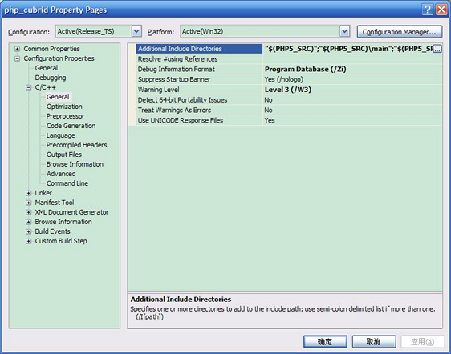
CUBRID PHP 드라이버 소스코드: https://www.cubrid.org/downloads#php 에서 CUBRID 버전에 맞는 CUBRID PHP 드라이버의 소스코드를 다운로드한다.
Note
PHP 5.6.x을 소스코드에서 빌드할 필요는 없지만 PHP 5.6.x 프로젝트를 설정해야 한다. PHP 5.6.x 프로젝트를 설정하지 않으면 VC11에서 config.w32.h 헤더 파일을 찾을 수 없다는 메시지가 출력된다. 설정 방법은 다음 주소를 참고한다. https://wiki.php.net/internals/windows/stepbystepbuild
CUBRID PHP 드라이버 빌드
다운로드한 CUBRID PHP 드라이버 소스코드의 \win 디렉터리에 있는 php_cubrid.vcproj 파일을 열고, 왼쪽의 [Solution Explorer] 창에서 php_cubrid 를 마우스 오른쪽 버튼으로 클릭하여 [Properties]를 선택한다.
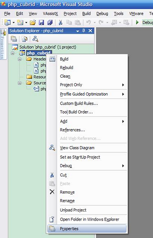
[Property Page] 대화 상자에서 [Configuration Manager]을 클릭한다. [Project context]의 [Configuration]에서 네 가지 설정(Release_TS, Release_NTS, Debug_TS and Debug_NTS) 중 원하는 값을 선택하고 [닫기]를 클릭한다.
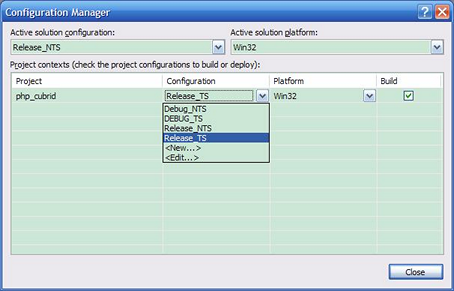
설정을 마친 후에는 [OK]를 클릭한 후, <F7> 키를 눌러 컴파일한다.
php_cubrid.dll 파일을 빌드한 후에는 PHP가 php_cubrid.dll 파일을 PHP 확장으로 인식하도록 다음 작업을 수행한다.
PHP를 설치한 폴더에 cubrid 폴더를 생성하고 해당 폴더에 php_cubrid.dll 파일을 복사한다. %PHPRC%\ext 디렉터리가 있다면 이 디렉터리에 php_cubrid.dll 파일을 복사해도 된다.
In php.ini 파일의 extension_dir 변수의 값으로 php_cubrid.dll 파일의 경로를 입력하고, extension 변수의 값으로 php_cubrid.dll 을 입력한다.
VC14을 이용하여 PHP 7.1.x용 CUBRID PHP 드라이버 빌드
환경 설정
CUBRID: CUBRID를 설치한다. 시스템에 환경 변수 %CUBRID% 가 정의되어 있는지 확인한다.
Windows SDK에 포함 된 무료 Visual C++ Express Edition 또는 Visual C++ 14 컴파일러를 모두 사용할 수 있다. CUBRID PHP VC14 드라이버를 사용하려면 시스템에 Microsoft Visual C++ Redistributable Package가 설치되어 있어야 한다.
PHP 7.1.x 바이너리: VC14 x86 Non Thread Safe 또는 VC6 x86 Thread Safe를 사용할 수 있다. 시스템 환경 변수 %PHPRC% 가 제대로 정의되어 있어야 한다. VC14 프로젝트의 [Project Settings]을 열면 [Link] 탭의 [Additional library path]에서 $(PHPRC) 가 사용되는 것을 볼 수 있다.

PHP 7.1.x 소스코드: 바이너리 버전에 맞는 소스코드를 다운로드해야 한다. PHP 소스코드를 다운로드한 후 압축 해제하고, 시스템 환경 변수 %PHP7_SRC% 를 추가하여 PHP 소스코드의 경로를 값으로 설정한다. VC11 프로젝트의 [Project Settings]을 열면 [C/C++] 탭의 [Additional include directories]에서 $(PHP7_SRC) 가 사용되는 것을 볼 수 있다.

CUBRID PHP 드라이버 소스코드: https://www.cubrid.org/downloads#php 에서 CUBRID 버전에 맞는 CUBRID PHP 드라이버의 소스코드를 다운로드한다.
Note
PHP 7.1.x 소스코드로 CUBRID PHP 드라이버를 빌드한다면, Windows에서 PHP 7.1.x를 설정해야 한다. PHP 7.1.x 프로젝트를 설정하지 않으면 VC9에서 config.w32.h 헤더 파일을 찾을 수 없다는 메시지가 출력된다. 설정 방법은 다음 주소를 참고한다. https://wiki.php.net/internals/windows/stepbystepbuild
CUBRID PHP 드라이버 빌드
다운로드한 CUBRID PHP 드라이버 소스코드에서 php_cubrid.dsp 파일을 열고, 메뉴에서 [Build] > [Set Active Configuration]를 선택한다. There are four configurations (Win32 Release_TS, Win32 Release, Win32 Debug_TS and Win32 Debug). Choose what you want, then close the [Set Active Project Configuration].

네 가지 프로젝트 설정(Win32 Release_TS, Win32 Release, Win32 Debug_TS and Win32 Debug) 중에서 원하는 설정을 선택하고 [OK]를 클릭한다.
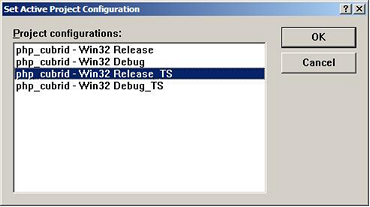
<F7> 키를 눌러 소스코드를 컴파일한다.
php_cubrid.dll 파일을 빌드한 후에는 PHP가 php_cubrid.dll 파일을 PHP 확장으로 인식하도록 다음 작업을 수행한다.
PHP를 설치한 폴더에 cubrid 폴더를 생성하고 해당 폴더에 php_cubrid.dll 파일을 복사한다. %PHPRC%\ext 디렉터리가 있다면 이 디렉터리에 php_cubrid.dll 파일을 복사해도 된다.
In php.ini 파일의 extension_dir 변수의 값으로 php_cubrid.dll 파일의 경로를 입력하고, extension 변수의 값으로 php_cubrid.dll 을 입력한다.
Windows x64 CUBRID PHP 드라이버 빌드
x64 PHP
PHP 5.6.x 바이너리 : VC11 x64 Non Thread Safe 또는 VC11 x64 Thread Safe를 설치할 수 있다. 시스템 환경 변수 %PHPRC% 가 제대로 정의되어 있어야 한다. [Property Pages] 대화 상자의 [Linker] 에서 [General]을 선택한다. [Additional Library Directories]에서 $(PHPRC) 를 볼 수 있다.
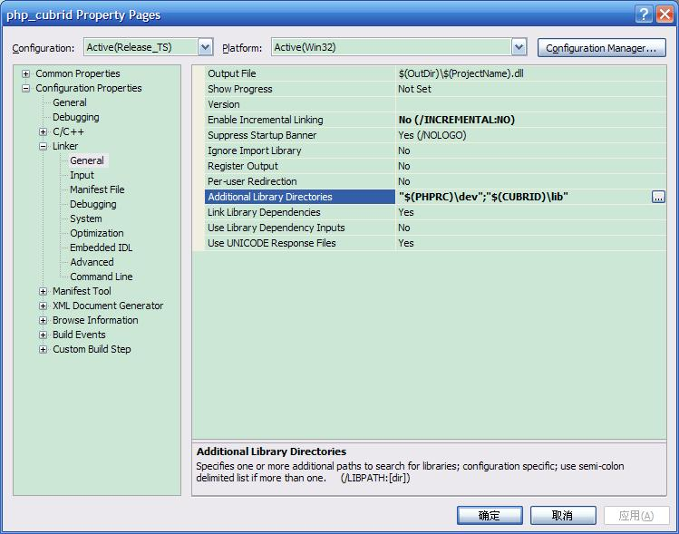
PHP 5.6.x 소스 코드 : 바이너리 버전과 일치하는 소스 코드를 가져와야 한다. PHP 5.6.x 소스 코드를 압축 해제한 후 시스템 환경 변수 %PHPRC% 를 추가하고 해당 값에 PHP 5.6.x 소스 코드의 경로로 설정해야 한다. [Property Pages] 대화 상자의 [C/C++] 에서 [General]을 선택한다. [Additional Library Directories]에서 $(PHP5_SRC) 를 볼 수 있다..
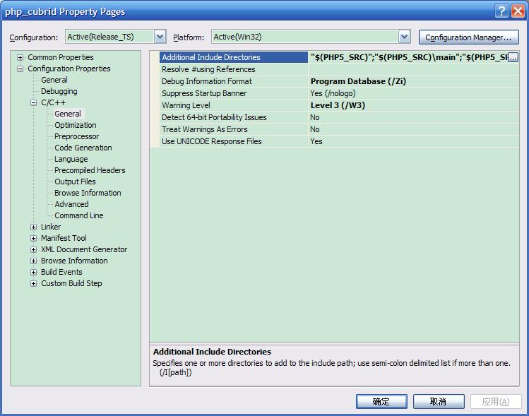
PHP 7.1.x 바이너리 : VC14 x64 Non Thread Safe 또는 VC14 x64 Thread Safe를 설치할 수 있다. 시스템 환경 변수 %PHPRC% 가 올바르게 설정되어 있는지 확인해야 한다. [Property Pages] 대화 상자의 [Linker] 에서 [General]을 선택한다. [Additional Library Directories]에서 $(PHPRC) 를 볼 수 있다.
PHP 7.1.x 소스 코드 : 바이너리 버전과 일치하는 소스 코드를 가져와야 한다. PHP 7.1.x 소스 코드를 압축을 해제한 후 시스템 환경 변수에 %PHP7_SRC% 를 추가하고 해당 값에 PHP 7.1.x 소스 코드의 경로로 설정해야 한다. [Property Pages] 대화 상자의 [C/C++] 에서 [General]을 선택한다. [Additional Library Directories]에서 $(PHP7_SRC) 를 볼 수 있다.
Windows에서 PHP 빌드를 지원하는 컴파일러 목록은 https://wiki.php.net/internals/windows/compiler 에서 제공하며, x64 PHP를 빌드할 때에는 Visual C++ 8(2005)와 Visual C++ 9(2008 SP1 only)을 사용할 수 있다는 것을 확인할 수 있다. Visual C++ 2005 미만 버전에서 x64 PHP를 빌드하려면 Windows Server Feb. 2003 SDK를 사용해야 한다.
https://wiki.php.net/internals/windows/compiler에는 Windows용 PHP 빌드를 지원하는 컴파일러를 찾을 수 있다. Visual C++ 11 (2012)과 Visual C++ 14 (2015)를 모두 사용하여 64bit PHP를 빌드 할 수 있음을 알 수 있다.
x64 Apache
Apache Lounge는 64bit 버전을 포함한 최신 Windows 바이너리를 제공한다. 다음 링크에서 최신 Apache 2.2.34 64bit 버전을 다운로드 할 수 있다.
환경 설정
CUBRID x64 버전: CUBRID x64의 최신 버전을 설치한다.시스템에 환경 변수 %CUBRID% 가 정의되어 있는지 확인한다.
Visual Studio 2012 or 2015: makefile을 잘 다룰 수 있는 사용자라면, Visual Studio 2008 대신에 무료인 Visual C++ Express Edition이나 Windows SDK v6.1에 포함된 VC++ 9 컴파일러를 사용할 수 있다. Windows에서 CUBRID PHP VC9 드라이버를 사용하려면 Visual C++ 2008 Redistributable Package가 설치되어 있어야 한다.
64-bit Windows 용 PHP 5.6.x 또는 7.1.x 바이너리 : VC11 또는 VC14 x64 이용하여 PHP를 빌드 할 수 있다. x64 Non Thread Safe와 x64 Thread Safe를 모두 사용할 수 있다. 설치 한 후 시스템 환경 변수 %PHPRC% 의 값이 올바르게 설정되어 있는지 확인 한다.
PHP 5.6.x 소스: 바이너리 버전에 맞는 소스코드를 소스코드를 다운로드해야 한다. PHP 5.6.x 소스를 압축 해제한 후 시스템 환경 변수에 %PHP5_SRC% 를 추가하고 해당 값에 PHP 5.6.x 소스 코드의 경로로 설정해야 한다. VC11 [Property Pages] 대화 상자의 [C/C++] 에서 [General]을 선택한다. [Additional Include Directories]에서 $(PHP5_SRC) 를 볼 수 있다.
PHP 7.1.x 소스코드: 바이너리 버전에 맞는 소스코드를 다운로드해야 한다. PHP 7.1.x 소스코드를 다운로드한 후 압축 해제하고, 시스템 환경 변수 %PHP7_SRC% 를 추가하여 PHP 7.1.x 소스코드의 경로를 값으로 설정한다. VC14 프로젝트 속성에서 [C/C++] > [General]을 선택하면 [Additional Library Directories]에서 $(PHP7_SRC) 가 사용되는 것을 볼 수 있다.
CUBRID PHP 드라이버 소스코드: https://www.cubrid.org/downloads#php 에서 CUBRID 버전에 맞는 CUBRID PHP 드라이버의 소스코드를 다운로드한다.
Note
PHP 7.1.x을 소스코드에서 빌드할 필요는 없지만 PHP 7.1.x 프로젝트를 설정해야 한다.PHP 7.1.x 프로젝트를 설정하지 않으면 VC14에서 config.w32.h 헤더 파일을 찾을 수 없다는 메시지가 출력된다. 설정 방법은 다음 주소를 참고한다. https://wiki.php.net/internals/windows/stepbystepbuild
PHP 5.6.x 또는 7.1.x 설정
SDK 6.1 또는 8.1 이상을 설치한 후에는 Windows [시작] 메뉴에서 [Microsoft Windows SDK v.x] > [CMD Shell]을 선택하여 명령 셸을 시작한다.
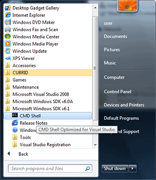
setenv /x64 /release 을 실행한다.

PHP 5.3 소스코드 디렉터리로 이동한 후 buildconf 을 실행하여 configure.js 파일을 생성한다.
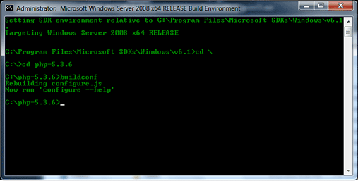
또는 PHP 5.3 소스코드에서 buildconf.bat 파일을 실행해도 같은 동작을 수행한다.
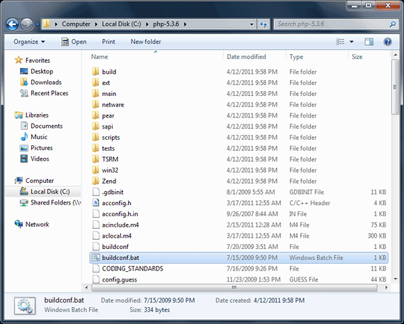
PHP 프로젝트를 설정하기 위해서 configure 를 실행한다.
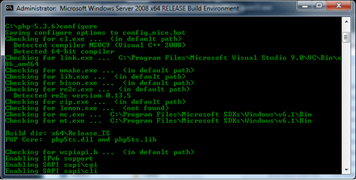

CUBRID PHP 드라이버 빌드
다운로드한 CUBRID PHP 드라이버 소스코드의 \win 디렉터리에 있는 php_cubrid.vcproj 파일을 열고, 왼쪽의 [Solution Explorer] 창에서 php_cubrid 를 마우스 오른쪽 버튼으로 클릭하여 [Properties]를 선택한다.
[Property Page] 대화 상자에서 [Configuration Manager]을 클릭한다.

[Configuration Manager] 대화 상자의 [Active solution configuration]에는 네 가지 설정(Release_TS, Release_NTS, Debug_TS and Debug_NTS)만 보인다. x64 CUBRID PHP 드라이버를 빌드하려면 새로운 설정을 생성해야 하므로 New 를 선택한다.

[New Solution Configuration] 대화상자에서 새로운 설정의 이름(예: Release_TS_x64)을 입력하고 [Copy settings from]에서 사용할 PHP와 같은 설정을 선택한다. 여기에서는 Release_TS 를 선택했다. 선택한 후에 [OK]를 클릭한다.

[Configuration Manager] 대화 상자에서 해당 프로젝트의 [Platform] 항목을 열어서 x64 가 있다면 x64 를 선택하고, 없으면 New 를 선택한다.
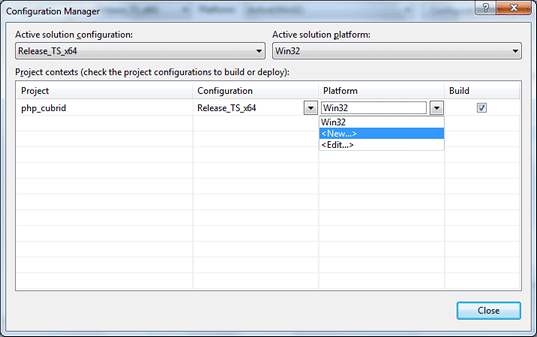
New 를 선택하면 [New Project Platform] 대화 상자가 나타난다. x64 를 선택하고 [OK]를 클릭한다.
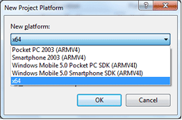
[php_cubrid Property Pages] 대화 상자에서 [C/C++] > [Preprocessor]를 선택하고, [Preprocessor Definitions]에서 _USE_32BIT_TIME_T 를 삭제한 후 [OK]를 클릭한다.

<F7> 키를 눌러 소스코드를 컴파일하면 x64 PHP 드라이버 파일이 생성된다.
PHP 프로그래밍¶
데이터베이스 연결¶
데이터베이스 응용에서 첫 단계는 cubrid_connect () 함수 또는 cubrid_connect_with_url () 함수를 사용하는 것으로 데이터베이스 연결을 제공한다. cubrid_connect 함수 또는 cubrid_connect_with_url () 함수가 성공적으로 수행되면, 데이터베이스를 사용할 수 있는 모든 함수를 사용할 수 있다. 응용을 완전히 끝내기 전에 cubrid_disconnect () 함수를 호출하는 것은 매우 중요하다. cubrid_disconnect () 함수는 현재 발생한 트랜잭션을 끝마치고 cubrid_connect () 함수에 의해 생성된 연결 핸들과 모든 요청 핸들을 종료한다.
Note
스레드 기반 프로그램에서 데이터베이스 연결은 각 스레드마다 독립적으로 사용해야 한다.
자동 커밋 모드에서 SELECT 문 수행 이후 모든 결과 셋이 fetch되지 않으면 커밋이 되지 않는다. 따라서, 자동 커밋 모드라 하더라도 프로그램 내에서 결과 셋에 대한 fetch 도중 어떠한 오류가 발생한다면 반드시 커밋 또는 롤백을 수행하여 트랜잭션을 종료 처리하도록 한다.
트랜잭션과 자동 커밋¶
CUBRID PHP는 트랜잭션과 자동 커밋 모드를 지원한다. 자동 커밋 모드에서는 하나의 질의마다 하나의 트랜잭션이 이루어진다. cubrid_get_autocommit () 함수를 사용하면 현재 연결의 자동 커밋 모드 여부를 확인할 수 있다. cubrid_set_autocommit () 함수를 사용하면 현재 연결의 자동 커밋 모드 여부를 설정할 수 있으며, 진행 중이던 트랜잭션은 모드 설정과 상관없이 커밋된다.
응용 프로그램 시작 시 자동 커밋 모드의 기본값은 브로커 파라미터인 CCI_DEFAULT_AUTOCOMMIT 으로 설정한다. 브로커 파라미터 설정을 생략하면 기본값은 ON 이다.
cubrid_set_autocommit () 함수에서 자동 커밋 모드를 OFF로 설정하면 커밋 또는 롤백을 명시하여 트랜잭션을 처리할 수 있다. 트랜잭션을 커밋하려면 cubrid_commit () 함수를 사용하고 트랜잭션을 롤백하려면 cubrid_rollback () 함수를 사용한다. cubrid_disconnect () 함수는 트랜잭션을 종료하고 커밋되지 않은 작업을 롤백한다.
질의 처리¶
질의 실행
다음은 질의 실행을 위한 기본 단계이다.
연결 핸들 생성
SQL 질의 요청에 대한 요청 핸들 생성
결과 가져오기
요청 핸들 종료
$con = cubrid_connect("192.168.0.10", 33000, "demodb");
if($con) {
$req = cubrid_execute($con, "select * from code");
if($req) {
while ($row = cubrid_fetch($req)) {
echo $row["s_name"];
echo $row["f_name"];
}
cubrid_close_request($req);
}
cubrid_disconnect($con);
}
질의 결과의 열 타입과 이름
cubrid_column_types () 함수를 사용하여 열 타입이 들어있는 배열을 얻을 수 있고, cubrid_column_types () 함수를 사용하여 열의 이름이 들어있는 배열을 얻을 수 있다.
$req = cubrid_execute($con, "select host_year, host_city from olympic");
if($req) {
$col_types = cubrid_column_types($req);
$col_names = cubrid_column_names($req);
while (list($key, $col_type) = each($col_types)) {
echo $col_type;
}
while (list($key, $col_name) = each($col_names))
echo $col_name;
}
cubrid_close_request($req);
}
커서 조정
질의 결과의 위치를 설정할 수 있다. cubrid_move_cursor () 함수를 사용하여 커서를 세 가지 포인트(질의 결과의 처음, 현재 커서 위치, 질의 결과의 끝) 중 한 포인트로부터 일정한 위치로 이동할 수 있다.
$req = cubrid_execute($con, "select host_year, host_city from olympic order by host_year");
if($req) {
cubrid_move_cursor($req, 20, CUBRID_CURSOR_CURRENT)
while ($row = cubrid_fetch($req, CUBRID_ASSOC)) {
echo $row["host_year"]." ";
echo $row["host_city"]."\n";
}
}
결과 배열 타입
cubrid_fetch () 함수의 결과에는 세가지 종류의 배열 타입 중 하나가 사용된다. cubrid_fetch () 함수가 호출될 때 배열의 타입을 결정할 수 있다. 그 중 하나인 연관배열은 문자열 색인을 사용한다. 두 번째로 수치배열은 숫자 순서 색인을 사용한다. 마지막 배열은 연관배열과 수치배열을 둘 다 포함한다.
수치배열
while (list($id, $name) = cubrid_fetch($req, CUBRID_NUM)) { echo $id; echo $name; }
연관배열
while ($row = cubrid_fetch($req, CUBRID_ASSOC)) { echo $row["id"]; echo $row["name"]; }
카탈로그 연산
클래스, 가상 클래스, 속성, 메서드, 트리거, 제약 조건 등 데이터베이스의 스키마 정보는 cubrid_schema () 함수를 호출하여 얻을 수 있다. cubrid_schema () 함수의 리턴 값은 2차원 배열이다.
$pk = cubrid_schema($con, CUBRID_SCH_PRIMARY_KEY, "game");
if ($pk) {
print_r($pk);
}
$fk = cubrid_schema($con, CUBRID_SCH_IMPORTED_KEYS, "game");
if ($fk) {
print_r($fk);
}
에러 처리
에러가 발생하면 대부분의 PHP 인터페이스 함수는 에러 메시지를 출력하고 false나 -1을 반환한다. cubrid_error_msg (), cubrid_error_code () 그리고 cubrid_error_code_facility () 함수를 사용하면 각각 에러 메시지, 에러 코드, 에러 기능 코드를 확인할 수 있다.
cubrid_error_code_facility () 함수의 결과 값은 CUBRID_FACILITY_DBMS (DBMS 에러), CUBRID_FACILITY_CAS (CAS 서버 에러), CUBRID_FACILITY_CCI (CCI 에러), CUBRID_FACILITY_CLIENT (PHP 모듈 에러) 중 하나이다.
OID 사용
cubrid_execute () 함수에서 CUBRID_INCLUDE_OID 옵션을 업데이트할 수 있는 질의를 함께 사용하면 cubrid_current_oid 함수를 통해 업데이트된 현재 f 레코드의 OID 값을 가져올 수 있다.
$req = cubrid_execute($con, "select * from person where id = 1", CUBRID_INCLUDE_OID);
if ($req) {
while ($row = cubrid_fetch($req)) {
echo cubrid_current_oid($req);
echo $row["id"];
echo $row["name"];
}
cubrid_close_request($req);
}
OID를 사용하여 인스턴스의 모든 속성, 지정한 속성 또는 한 속성의 값을 얻을 수 있다.
만약 cubrid_get () 함수에 속성을 명시하지 않으면 모든 속성의 값을 반환한다(a). 만약 배열 데이터 타입으로 속성을 명시하면 지정한 속성 값이 들어있는 배열은 연관배열로 반환된다(b). 만약 문자열 타입으로 한 속성을 명시하면 속성의 값이 반환된다(c).
$attrarray = cubrid_get ($con, $oid); // (a)
$attrarray = cubrid_get ($con, $oid, array("id", "name")); // (b)
$attrarray = cubrid_get ($con, $oid, "id"); // (c)
OID를 사용하여 인스턴스의 속성 값을 갱신할 수도 있다. 하나의 속성의 값을 갱신하려면 속성 이름을 문자열 타입으로 명시하고 값을 명시한다(a). 다중 속성의 값을 설정하려면 속성 명과 값을 연관배열로 명시해야 한다(b).
$cubrid_put ($con, $oid, "id", 1); // (a)
$cubrid_put ($con, $oid, array("id"=>1, "name"=>"Tomas")); // (b)
컬렉션 사용
컬렉션 데이터 타입은 PHP 배열 데이터 타입을 통해 사용할 수 있고 배열 데이터 타입을 지원하는 PHP 함수를 사용할 수 있다. 다음은 cubrid_fetch () 함수를 사용하여 질의 결과를 가져오는 예제이다.
$row = cubrid_fetch ($req);
$col = $row["customer"];
while (list ($key, $cust) = each ($col)) {
echo $cust;
}
컬렉션 속성의 값도 얻을 수 있다. 다음은 cubrid_col_get () 함수를 사용하여 컬렉션 속성 값을 가져오는 예제이다.
$tels = cubrid_col_get ($con, $oid, "tels");
while (list ($key, $tel) = each ($tels)) {
echo $tel."\n";
}
cubrid_set_add() 함수와 cubrid_set_drop() 함수를 사용하면 컬렉션 타입의 값을 직접적으로 갱신할 수 있다.
$tels = cubrid_col_get ($con, $oid, "tels");
while (list ($key, $tel) = each ($tels)) {
$res = cubrid_set_drop ($con, $oid, "tel", $tel);
}
cubrid_commit ($con);
Note
칼럼에서 정의한 크기보다 큰 문자열을 INSERT / UPDATE 하면 문자열이 잘려서 입력된다.